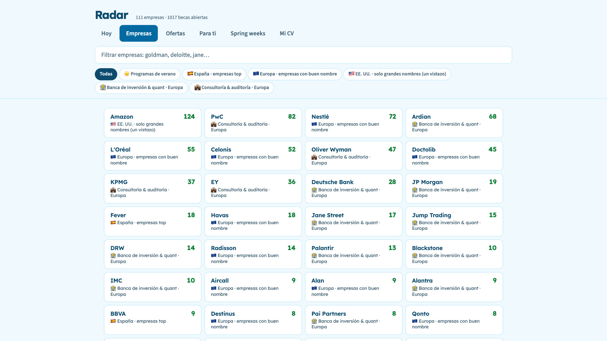
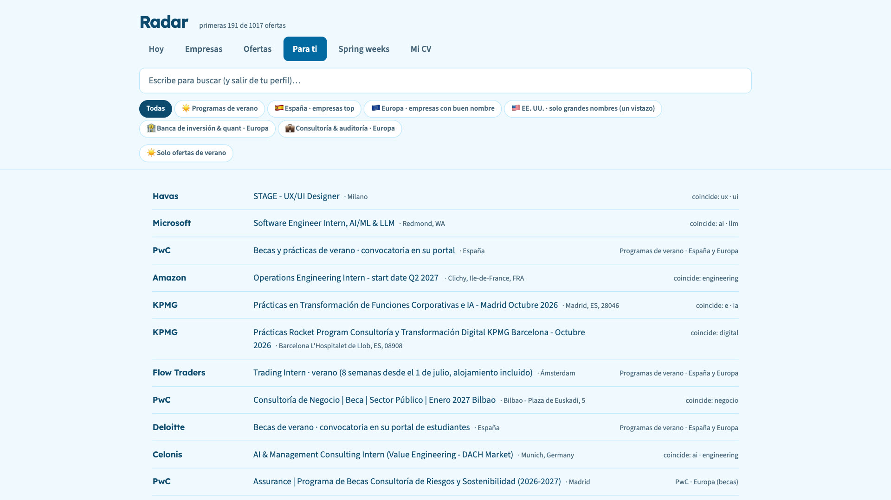

One list for every internship opening.
Radar reads the job boards companies already publish, keeps everything in a SQLite file on your disk, and ranks it against your CV. No account, no cloud, no API key.
Free & open source · Apple Silicon and Intel · 20 MB · macOS 11+ · runs on your own computer · interface in Spanish · Source on GitHub · How to install
Why it exists
Internship listings live in a hundred career pages, each showing a different slice. Newsletters throw the data away after sending it. There was no single list, no memory of what you had already seen, and no way to ask which of these actually match my CV? Radar is that list, kept on your own disk.
What it does
Walks 89 company boards on public ATS APIs (Greenhouse, Lever, Ashby, Workday, SmartRecruiters and more) plus community GitHub boards. A first run takes about five minutes; after that it refreshes itself when you open it (or nightly, if you run it from source).
SQLite FTS5 and bm25(). No model, no tokens, no network. Paste your CV once and the Para ti ("For you") tab is ordered by match, showing the terms that hit.
descr.py fetches the actual job description so you can judge a role without leaving the app. Postings that can't be read say why.
Filters by graduation year, summer-only, degree level and region (es, uk, de, benelux, us…), all set in one config file.
Shows what came in since your last visit and flags openings the source stopped confirming, instead of letting them rot in the list.
One button builds a prompt with the posting and your CV inside. You paste it into any assistant; it tells you what to leave as [COMPLETAR] rather than invent.
Real numbers from the author's database
Snapshot of the author's local catalogue, last refreshed 22 September 2026.
What it looks like


How it is put together
- ingesta.py walks the boards and writes through
db.upsert(), nothing else. All standard library. - db.py + jobs.db: every SQL statement in the project lives in one file; FTS5 lives inside
search(). - app.py + index.html: a Python
ThreadingHTTPServeron127.0.0.1and one HTML file. Nothing is ever exposed to your network.
Install on your Mac
About a minute. Step 3 happens only the first time.
-
Drag it into Applications
Open Radar.dmg and drag Radar onto the Applications folder.
-
Open it. macOS stops it. Click Done.
macOS says Apple could not verify “Radar” is free of malware. It says that about every app that isn't notarized by Apple. Click Done, not Move to Trash.
-
Open Anyway, once
Open System Settings → Privacy & Security, scroll down to Security and click Open Anyway next to “Radar” was blocked. Confirm with your password or Touch ID. From then on it opens with a double-click.
- Then: let it fill, paste your CV
The first time it reads every board (about 5 minutes, with a progress bar). Then paste your CV in Mi CV and open Para ti. It refreshes by itself when you open it.
Why the warning? Notarizing an app needs a paid Apple developer account ($99 a year). This is a free side project, so it isn't notarized. The full source code is on GitHub, and you can check that your download is exactly the file I built. In Terminal:
shasum -a 256 ~/Downloads/Radar.dmg
should print 8a5e582dc6603458bd5d41c67ef7482c263bc6d74919ddb61fc8bd928e158dfb
Prefer the Terminal for step 3?
xattr -dr com.apple.quarantine "/Applications/Radar.app"
Or run it from source
There is no hosted demo, on purpose. Radar holds your CV and your applications, so it runs on your machine at http://localhost:8000 instead of on somebody's server. You need Python 3.9+ with SQLite FTS5, nothing else.
git clone https://github.com/nachoie123/radar.git cd radar chmod +x instalar.command Radar.command ./instalar.command # macOS: sets up the nightly agents and opens the app # Linux / Windows python3 ingesta.py # fills the catalogue (~5 min the first time) python3 app.py # serves http://localhost:8000